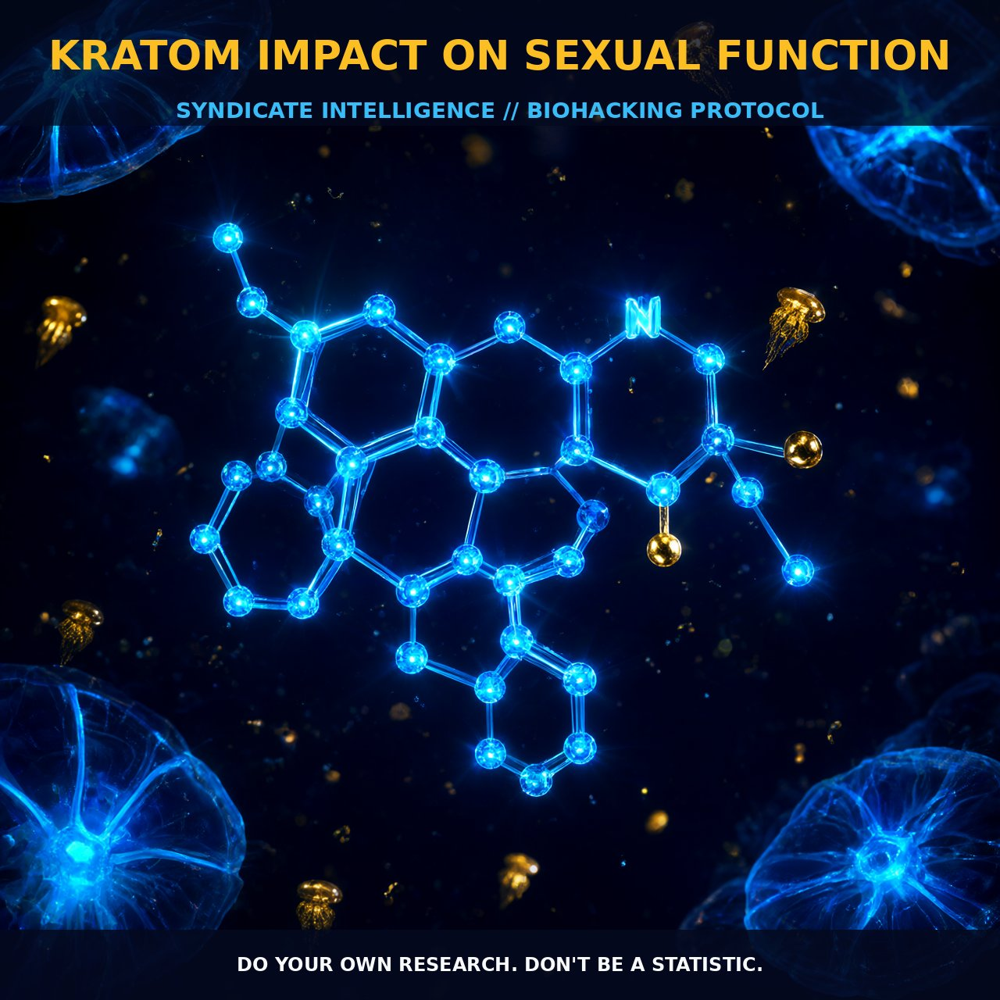

Kratoms Impact on Sexual Function: The Mechanism and

1. The Mechanism
Kratom, derived from the Mitragyna speciosa tree, exerts its effects through a complex interplay of pharmacological mechanisms involving various alkaloids. The primary active components, mitragynine and 7-hydroxymitragynine, act on opioid receptors, particularly the μ-opioid receptor. These alkaloids also interact with other receptors such as the κ-opioid and δ-opioid receptors, contributing to its multifaceted impact on the body. Additionally, kratom compounds modulate adrenergic receptors and dopaminergic pathways, influencing mood, energy levels, and pain perception. The presence of calcium channel blockers in kratom further adds to its pharmacological profile, impacting cardiovascular function.
Kratom’s effects on sexual function are primarily linked to its modulation of opioid and dopaminergic systems. Opioid receptors, particularly the μ-receptor, play a significant role in sexual behavior, and the activation of these receptors by kratom can influence libido and sexual performance. The dopaminergic system, which is involved in reward and motivation, is also affected by kratom, potentially impacting sexual desire and arousal. Furthermore, the adrenergic system, which regulates sympathetic nervous system activity, is modulated by kratom, influencing sexual function through its impact on blood pressure and heart rate.
2. Biological Leverage
The biological leverage of kratom on sexual function is multifaceted, influenced by its complex interaction with various receptors and neurotransmitter systems. The primary mechanism involves the activation of μ-opioid receptors, which can both enhance and suppress sexual function depending on the dose and individual physiology. At low-to-moderate doses, kratom may enhance sexual desire by increasing dopamine levels and activating the reward pathways, leading to an improvement in libido and sexual performance. However, at higher doses, the sedative and anxiolytic effects of kratom can lead to a suppression of sexual drive and performance, as seen in some users who report a decrease in sexual desire and function.
Kratom’s impact on the dopaminergic system also contributes to its influence on sexual function. Dopamine, a neurotransmitter critical for sexual motivation and pleasure, is modulated by kratom, potentially enhancing sexual arousal and performance. Additionally, the adrenergic system, which plays a role in sexual arousal through its impact on blood flow and heart rate, is influenced by kratom’s calcium channel-blocking compounds. This modulation can lead to improved blood flow and reduced cardiovascular stress, enhancing sexual performance. However, the calcium channel-blocking effects can also lead to potential side effects such as elevated heart rate and palpitations, which may impact sexual function in some individuals.
The variability in individual response to kratom is significant, with some users reporting an improvement in sexual function while others experience a decrease. This duality in user experiences suggests that the effects of kratom on sexual function are highly individualized and can vary based on factors such as dosage, strain, and concurrent use of other substances. The role of individual physiology, including genetic factors and baseline neurotransmitter levels, further contributes to the diverse responses observed in users.
3. Protocol Implementation
To optimize kratom’s impact on sexual function, biohackers should consider the dosage, timing, and stacking strategies that best suit their individual physiology. Low-to-moderate doses of kratom, typically ranging from 1 to 5 grams, are often recommended to enhance sexual performance and libido. These doses activate the opioid and dopaminergic systems without inducing significant sedation, potentially improving sexual arousal and performance. Users should experiment with different strains of kratom, as some strains may be more effective for enhancing sexual function than others.
Timing is also critical, with many users finding that taking kratom in the morning or early afternoon, before sexual activity, leads to better results. This timing allows for the optimal modulation of neurotransmitter systems and cardiovascular function, enhancing sexual performance without causing sedation. Stacking kratom with other supplements such as L-arginine or L-citrulline can further enhance blood flow and improve sexual performance, as these compounds increase nitric oxide production, promoting vasodilation.
However, users should be cautious with stacking kratom with substances that may interact with the opioid or adrenergic systems, such as calcium channel blockers or stimulants, to avoid potential side effects such as elevated heart rate and palpitations. Additionally, monitoring the liver function and hydration levels is essential, as kratom can cause liver-related issues and dehydration, impacting sexual function.
Prostar Life Hack
Optimize Your Sexual Function with Kratom: Experiment with low-to-moderate doses (1-5 grams) of kratom in the morning or early afternoon. Stack with L-arginine or L-citrulline for enhanced blood flow and performance.
[ AUTHOR: LEAD TECHNICAL RESEARCHER ]